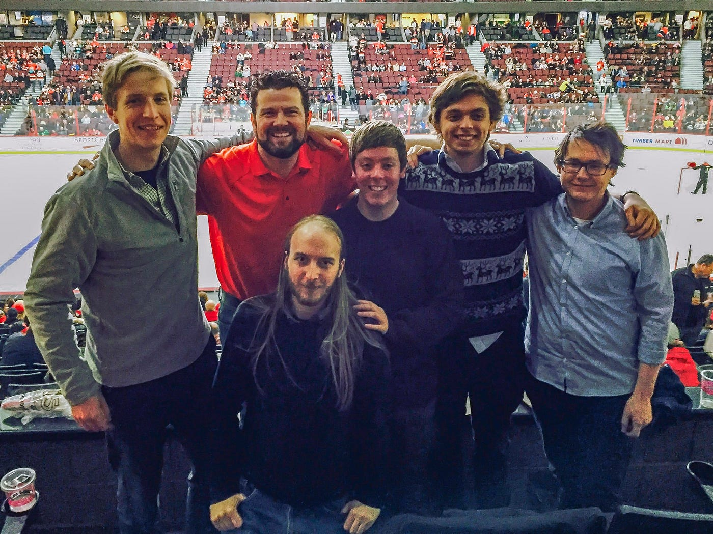

James was born in Wales in 1994. He obtained his Bachelors degree by studying physics at the University of Bath for three years. During his third year he began his programming journey where one of his early projects was creating a program that utilised images from the SOHO satellite to detect sunspots and comets. It was here that James found a love for programming. Being a Welshman James wanted to create a tech company in a area not known for the injustry. To achieve this, after gradutating he joined a coding bootcamp called The Alacrity Foundation to further develop his skilset. One of the requirements was to create a website in which James created a games ladder for '8 Bit Armies' using the data stream from the devs. This website also allowed him to gain skills in server running and various other AWS tool.The year that James spent here gave him and his team the opportunity to travel to Canada to work with WesleyClover.
James's Alacrity group
Since then James has worked on a variety of projects as a freelancer. From working on a Unity API called Mirage to providing the backend networking for various indie games inluding Wolves and Nuclear Option.
Wolves
Nuclear Option